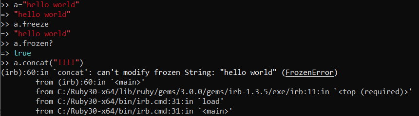
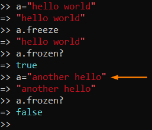

freeze
basically it's make object constant or immutable in ruby
 when we attempt to modify the string, we get a
RuntimeError.
Still possible change value of the
variableAnyway because freeze operates on the String object(
example: “hello world”)and not on the variable(
example: a) that holds the pointer to the object, it is legal to assign a new
object(
example: “another hello”) to a variable (
example: a) that refers a frozen object
Why use freeze?Because
every time you do a method call like log("foobar"), you create a new String object. If your code calls a
method like this thousands of times per second, that means you're creating (and garbage-collecting) thousands of
strings per second. That's a lot of overhead!
Fortunately, Ruby gives us a way out. If we freeze string
literals, the Ruby interpreter will only create one String object and will cache it for future
use.
Bibliography:
https://www.honeybadger.io/blog/when-to-use-freeze-and-frozen-in-ruby/